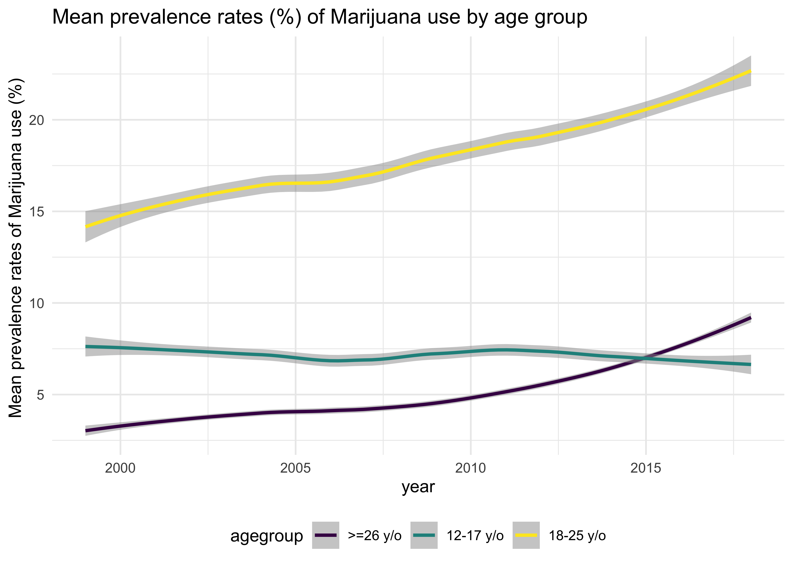

This project is overall motivated by the current major public health issue in United States: the Illicit drug use. Previous studies showed a relationship between illicit drug use and pop music [1,2], indicating that pop music may have a potential encouraging effect on illicit drug use [3]. However, these studies are either cross-sectional, or need to be reproduce using more recent data. In this study, we will describe the trend of music genre, frequency of illicit drug in the popular music, and the relationship between popular music and illicit drug use during the period of 1999-2019.
The questions for this project are based on the 3 datasets we used which are explained in the next section:
year:year of publishedlyric:lyric of the songgenre:music genre(country,rock,hip hop etc.)year
agegroup:‘1’=age 12-17;‘2’=age 18-25;‘3’=age >25
outcome:
-Cocaine use in the last year
-Illicit drugs other than marijuana use in the last month
-Marijuana use in the past month
-Any illicit drug use in the last month
-Annual incidence of first use of marijuana
-Binge drinking in the last month
-Risk perception on smoking marijuana once a month
bsae: the percentage of outcome behavior in specific age group and area
area: ‘0’=National Level;‘1’=State level
Kaggler. It’s a zip file, so unzip the file and put the data into the data folder. The Billboard data is named as ‘billboard’.
rvest and httr, the 2 lists are named as word_bank_raw and word_bank_raw2, respectively.
The prevalence rates of Marijuana use is increasing from 1999-2018 at national level in both 18-25 age group and >=26 age group. The 18-25 age group is the highest Marijuana usage group.
songs_abuse%>%
filter(outcome=="Marijuana use in the past month",area==0)%>%
group_by(year,agegrp)%>%
summarize(
mean_bsae = mean(bsae)
)%>%
ggplot(aes(x = year, y = mean_bsae)) +
geom_smooth(aes(color = agegrp), alpha = .5)+
labs(title = "Mean prevalence rates (%) of Marijuana use by age group",
y = "Mean prevalence rates of Marijuana use (%) ",
color = "agegroup")
The prevalence rates of illicit drug other than Marijuana is decreasing from 2003-2013 at national level after a peak in 2003-2004 in both 18-25 age group and 12-17 age group.
songs_abuse%>%
filter(outcome=="Illicit drugs other than marijuana use in the last month",area==0)%>%
group_by(year,agegrp)%>%
summarize(
mean_bsae = mean(bsae)
)%>%
ggplot(aes(x = year, y = mean_bsae)) +
geom_smooth(aes(color = agegrp), alpha = .5)+
labs(title = "Mean prevalence rates (%) of illicit durg other than marijuana by age group",
y = "Mean prevalence rates (%) of illicit durg other than marijuana",
color = "agegroup")
genly = read_csv("./data/genly_billboard.csv", col_names = TRUE) %>%
mutate(gen_cate = str_remove(gen_cate, "gen_"),
gen_cate = str_replace(gen_cate,"hiphop", "hip-hop/RnB"),
lyr_des = as_factor(lyr_des),
gen_cate = as_factor(gen_cate)) %>%
select(-lyr_gen)
songs_abuse = read_csv("./data/songs_abuse.csv", col_names = TRUE) %>%
filter(area == 0) %>%
mutate(agegrp = as_factor(agegrp),
outcome = as_factor(outcome)) %>%
select(-n_lyrics,-total,-stname,-pyearnm)
Hip-hop/R&B and rap music are getting popular, while country music and rock music are getting less hot.
genly %>%
filter(lyr_des == "alcohol") %>%
mutate(text_label = str_c("Genre: ", gen_cate, "\nPopularity: ", round(p_genre, 2), "% \n(95% CI: ",round(p_gen_lci,2),"% - ",round(p_gen_uci,2),"%)")) %>%
rename("Percentage" = "p_genre") %>%
plot_ly(
x = ~ year,
y = ~ Percentage,
color = ~ gen_cate,
text = ~text_label,
type = "scatter",
alpha = 0.7
) %>%
add_paths() %>%
add_ribbons( ymin = ~ p_gen_lci,
ymax = ~ p_gen_uci,
alpha = 0.3)
Generally, substances are more and more often mentioned. Rap music mentioned substances most.
genly %>%
filter(gen_cate == "country") %>%
mutate(text_label = str_c("Substance mentioned: ", lyr_des, "\nPopularity: ", round(p_lyrics, 2), "% \n(95% CI: ",round(p_lyr_lci,2),"% - ",round(p_lyr_uci,2),"%)")) %>%
rename("Percentage" = "p_lyrics") %>%
plot_ly(
x = ~ year,
y = ~ Percentage,
color = ~ lyr_des,
text = ~text_label,
type = "scatter",
alpha = 0.7
) %>%
add_paths() %>%
add_ribbons( ymin = ~ p_lyr_lci,
ymax = ~ p_lyr_uci,
alpha = 0.3)
With the increasing proportion of marijuana description in popular songs, more and more people aged 18-25 years used marijuana.
songs_abuse=read_csv("./data/songs_abuse.csv")songs_abuse%>%
filter(stname=="National", outcome=="Marijuana use in the past month")%>%
group_by(year)%>%
ggplot(aes(x = p_lyrics, y = bsae, color = agegrp)) +
geom_point() +
geom_smooth(aes(group = agegrp), se = F) +
labs(x="% of marijuana lyric",
y = "Marijuana use in the past(%)",
color = "agegroup")
Overall, the findings for the popular music and illicit drug usage data is consistent with what we had originally hypothesized. Descriptively, we found that the frequency of substance description in popular music increases along with the substance usage in the age group of 18-25 over the years.
While we did find that most marijuana usage increases significantly during the period of 1999-2019, the frequency of binge drinking and alcohol usage do not have a significantly increased trend and are even decreaseingat national level, which is unexpected and interesting to learn.
Limitations
Although the regression result and our plot indicate a positive association between popular music and substance, our analysis focus on the summarized data instead of individual level of data, thus the model construction is limited due to the simplified data quality. Also, the substance classification is done by string cast instead of manually classification, thus the quality of data is lacking accuracy and limited
Overall, our findings shows a positive trend of substance use in age group of 18-25 during the period of 1999-2019, along with a increased frequency of substance description in the lyric of popular music.